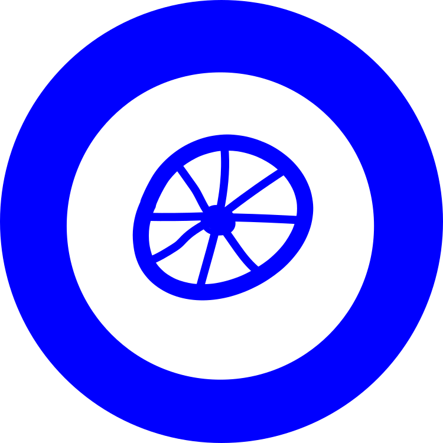
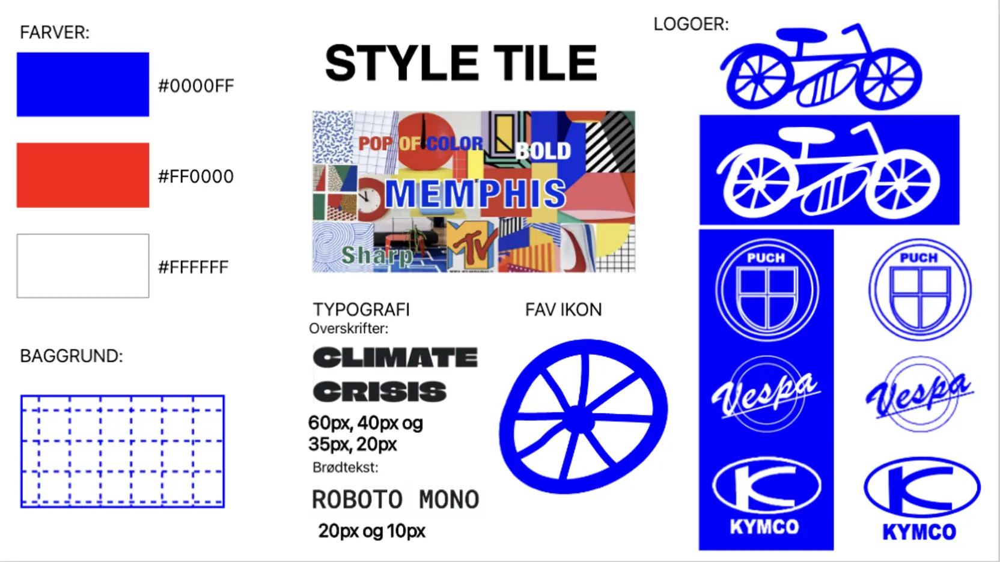
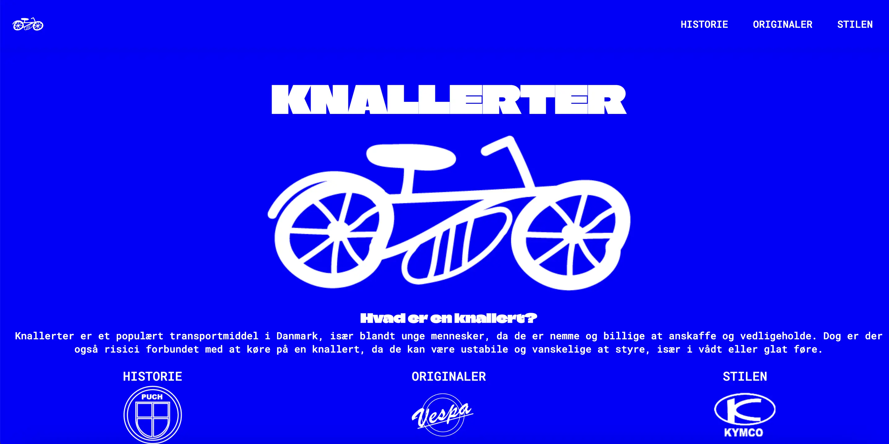
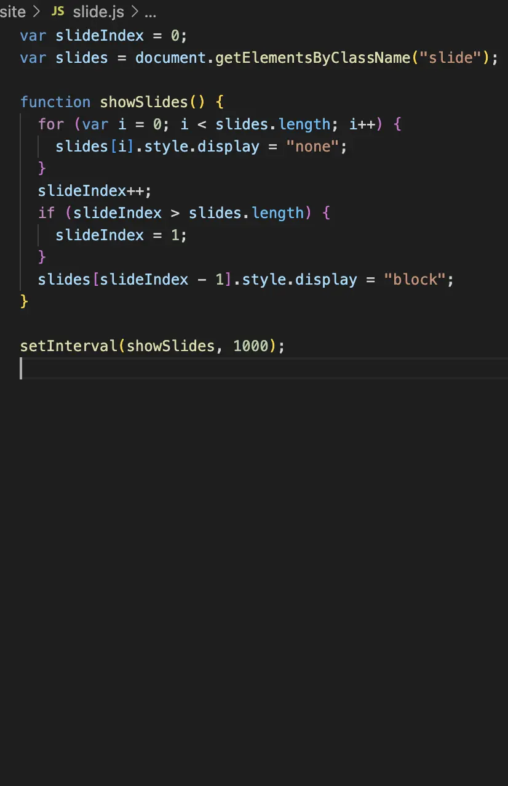
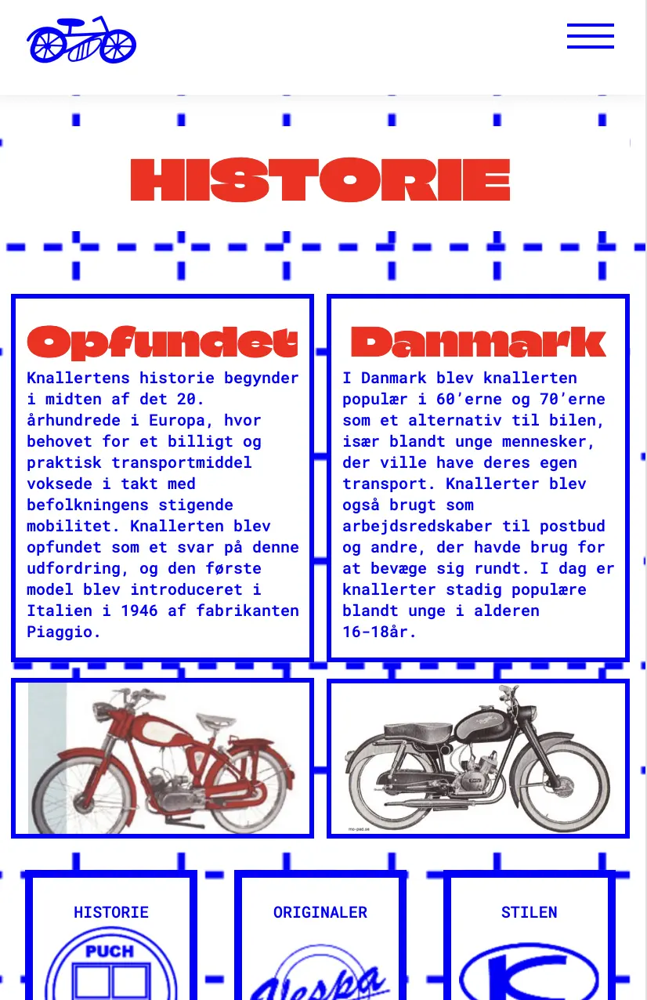
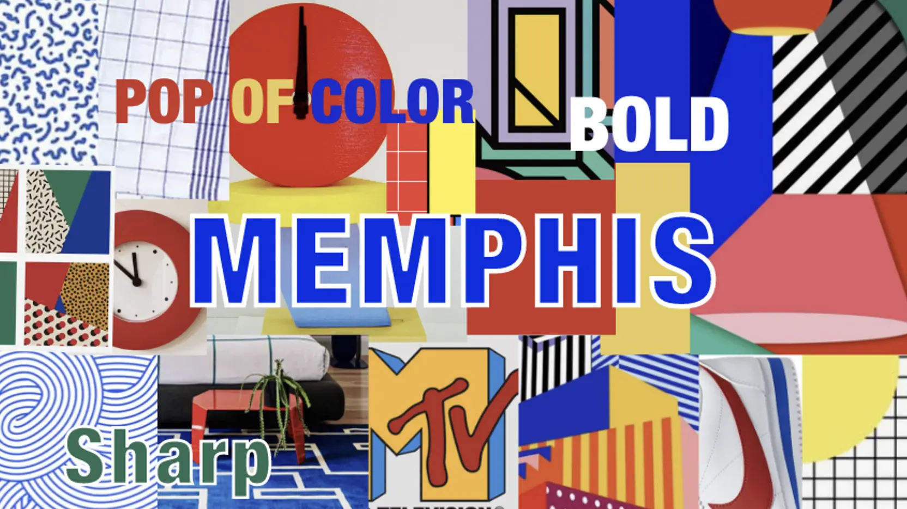

EMNESITE // KNALLERTER
I dette forløb blev vi sat mere ind i grundlæggende web, da vi selv skulle udforme wireframe- og
layoutdiagrammer,
moodboard og mockups. Vi blev også introduceret til gestalt-principper, farveharmonier og
kontraster, samt
Adobe-programmerne XD og Illustrator. Min ide udformede sig af forestillingen om en tegnet knallert
med et kørende hjul.
Derefter valgte jeg emnet knallerter og herefter stilen MEMPHIS, da jeg er meget inspireret af
farvekonstrasterne.
På min forside brugte jeg java-script til at fuldføre min ide om den kørende knallert. Den tydelige
kontrast i farverne,
sammen det bløde og uskarpe fra tegningen, skaber den dynamik jeg sigtede efter i min opgave. I
opgaven havde jeg også
meget fokus på gestalt-love som Loven om proximity, loven om lukkethed og loven om similarity.
På mit moodboard og styletile er jeg gået i dybden med Memphis style, og viser hvilke fonte, samt
farver jeg har gjort
brug af på min side.




